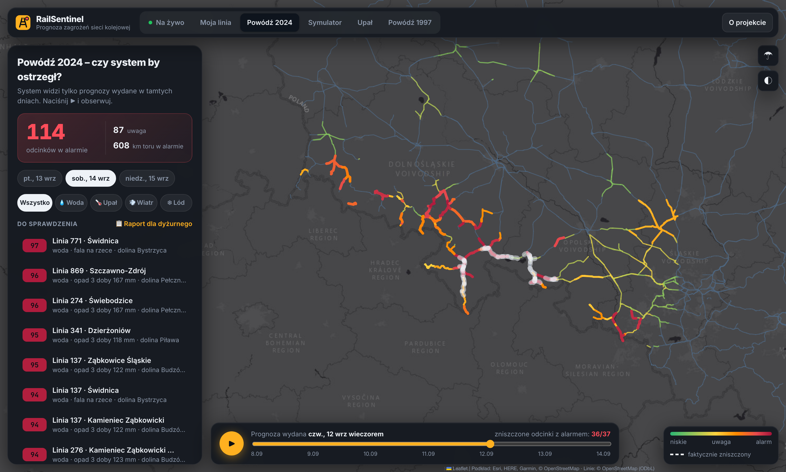
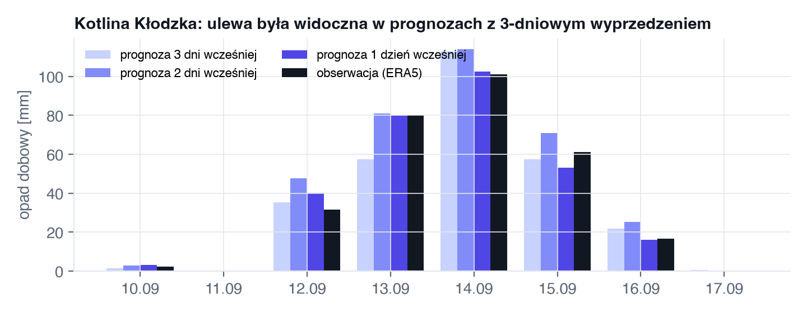
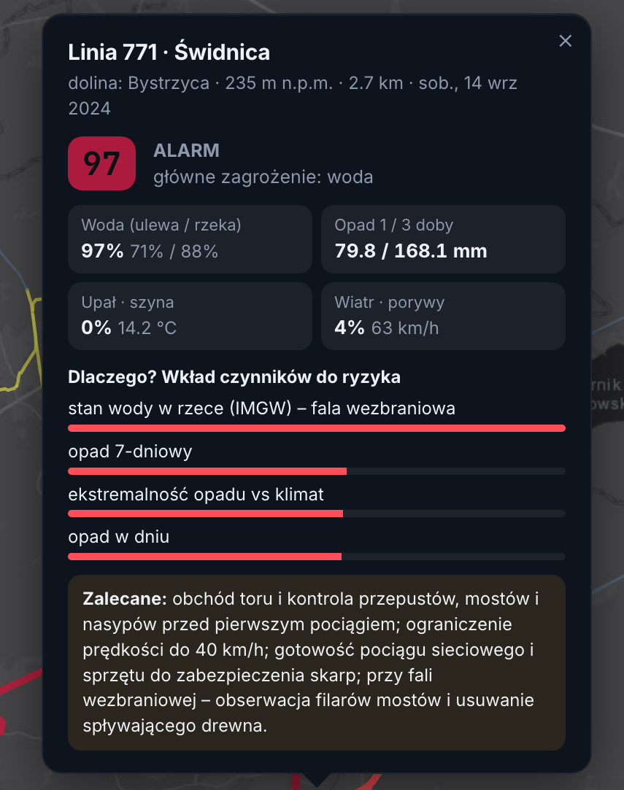
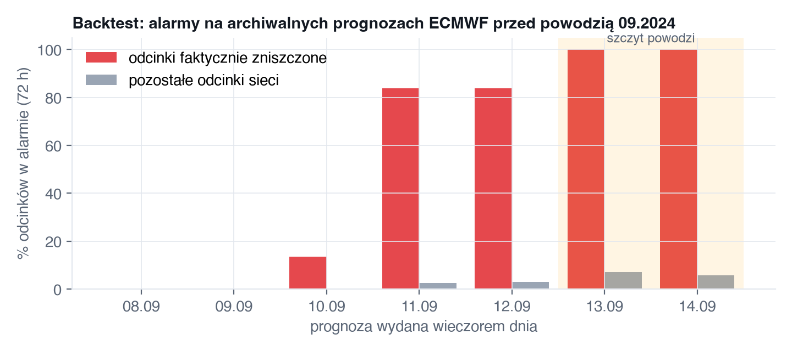
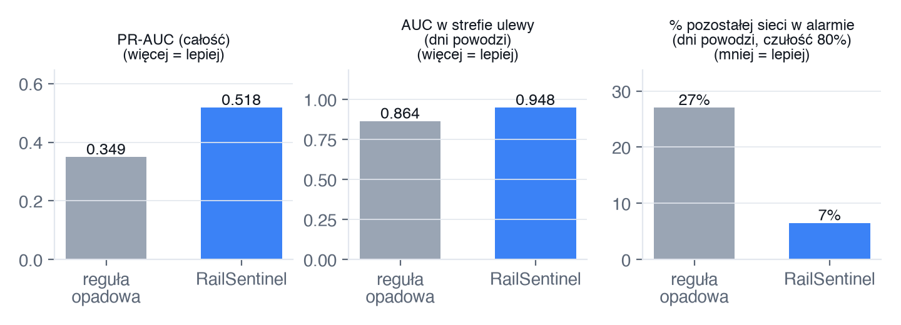
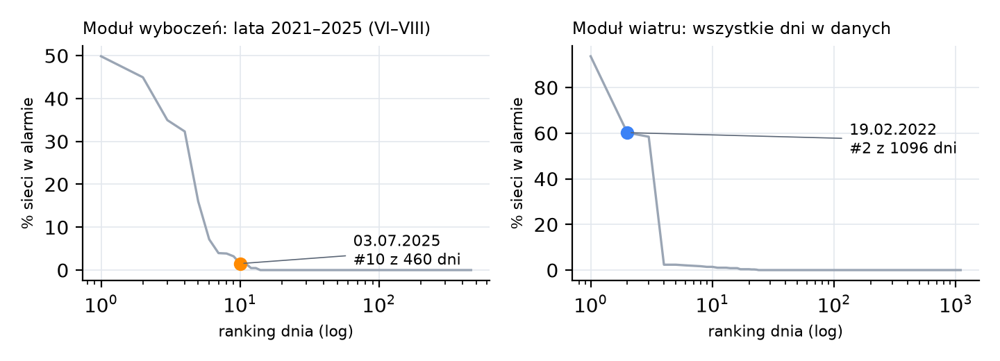
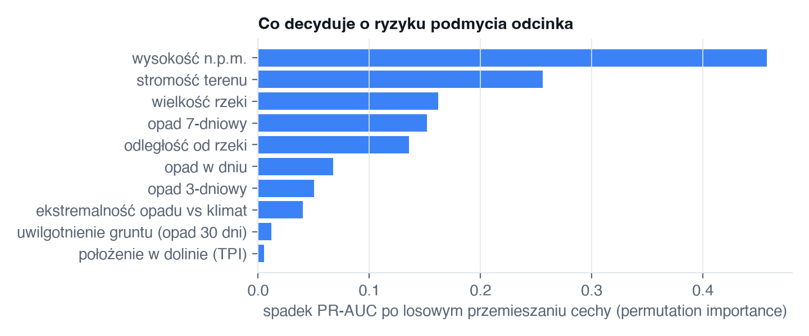
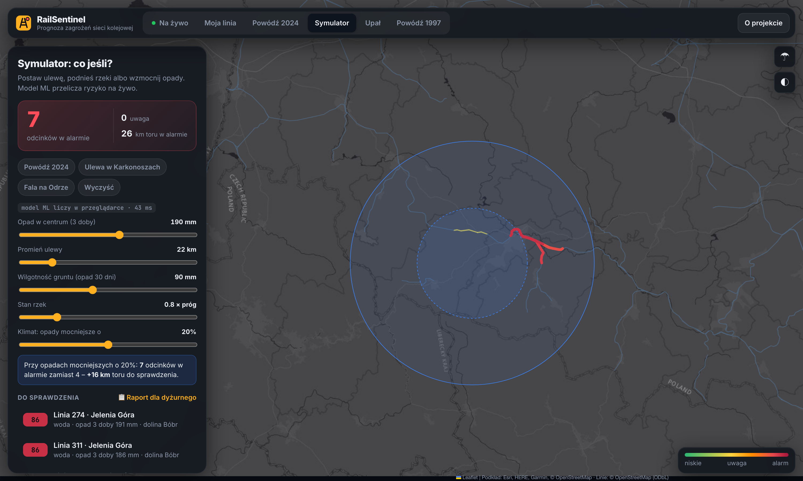
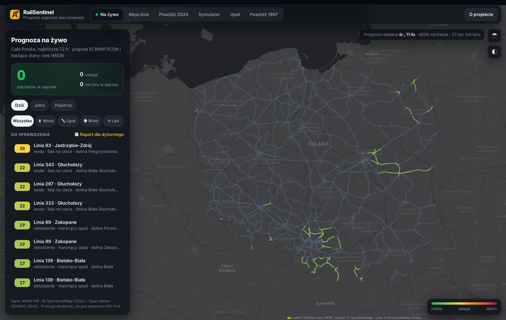
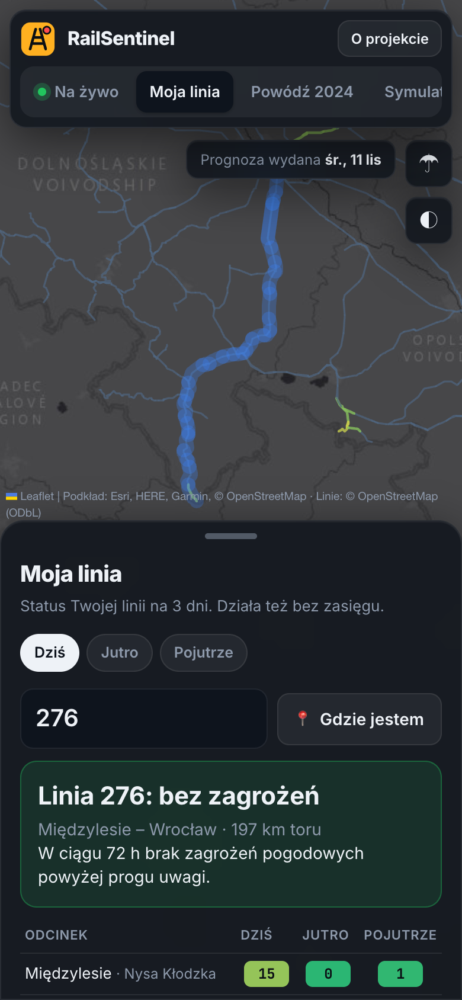

Prognoza zagrożeń infrastruktury kolejowej na 72 godziny – dla całej Polski.
Uczenie maszynowe + prognoza pogody + wodowskazy IMGW + teren → lista odcinków, które trzeba sprawdzić, zanim stanie się wypadek.

Dashboard RailSentinel: odcinki linii kolejowych Dolnego Śląska i Opolszczyzny pokolorowane według ryzyka, prognoza wydana wieczorem 12.09.2024 na 14.09; przerywana obwódka – odcinki faktycznie zniszczone w powodzi.
Autor{{author}}
Uczelnia / kierunekPolitechnika Wrocławska · Informatyczne Systemy Automatyki
Forma pracyDziałający prototyp (model ML + aplikacja webowa z symulatorem) i koncepcja wdrożenia
Aplikacja i stronarailsentinel.pl · film · kod: github.com/maciejonisiewicz/railsentinel
01Streszczenie
Problem. Ulewy, powodzie, upały i wichury są coraz częstsze, a kolej jest na nie szczególnie wrażliwa. Powódź z września 2024 r. spowodowała straty w infrastrukturze PLK wstępnie szacowane na 880 mln zł. Podczas orkanu Eunice (19.02.2022) PLK odnotowały 400 zdarzeń pogodowych jednego dnia. Ostrzeżenia meteorologiczne i hydrologiczne wydaje się dziś dla powiatów i rzek, a nie dla kilometrów toru. Nikt nie mówi dyżurnemu, który konkretnie odcinek jest zagrożony.
Rozwiązanie. RailSentinel codziennie przelicza ryzyko dla każdego ok. 5-kilometrowego odcinka sieci. Powódź modeluje jako dwa mechanizmy: (A) lokalną ulewę i podmycie toru, którą ocenia model uczenia maszynowego z wbudowaną wiedzą fizyczną, oraz (B) falę wezbraniową, która przychodzi rzeką z gór, ocenianą przez drugi model ML, który prognozuje stany ok. 800 wodowskazów IMGW na 3 dni. Do tego dochodzą moduły wyboczenia toru w upale, wichury i oblodzenia sieci. Wynikiem są mapa ryzyka, ranking odcinków i gotowy raport dla dyżurnego z zalecanymi działaniami. Każdy alarm ma wyjaśnienie: dlaczego ten odcinek.
Dowód na dwóch powodziach. System obejmuje całą Polskę: {{n_segments}} odcinków ({{km}} km torów) i {{n_gauges}} wodowskazów, wyłącznie na danych publicznych. Etykiety zniszczeń zebrałem dla Dolnego Śląska i Opolszczyzny, więc tam odbywa się trening i walidacja. W backteście 2024 korzysta tylko z prognoz ECMWF dostępnych przed powodzią, a każdy odcinek ocenia model, który nie widział jego linii. Następnie bez żadnego douczania sprawdziłem go na powodzi tysiąclecia z 1997 r.
{{detected}}/{{damaged}}odcinków zniszczonych w 2024 r. z alarmem przed czasem, mediana {{median_lead}} h przed pierwszymi zniszczeniami
{{s97}}/3udokumentowanych miejsc zniszczeń z 1997 r. wykrytych w niezależnym teście (sam model ML: {{s97ml}}/3)
{{event_auc_model}}AUC w strefie ulewy: trafność wskazania właściwych odcinków (reguła opadowa: {{event_auc_baseline}})
+{{rgain}}%więcej przekroczeń stanu rzek wykrytych z 2-dniowym wyprzedzeniem dzięki ML-owej prognozie fali
Odbiorcy. Dyżurni i dyspozytorzy (Centra Zarządzania Ruchem), zakłady linii kolejowych odpowiedzialne za utrzymanie, sztaby kryzysowe PLK, a pośrednio przewoźnicy i pasażerowie.
Oczekiwana zmiana. Przejście od „sprawdzamy po fakcie” do „sprawdzamy zanim”: wcześniejsze obchody i ograniczenia prędkości na kilkudziesięciu wskazanych odcinkach zamiast na całym obszarze ostrzeżenia, mniej pociągów na uszkodzonym torze i krótsze przerwy w ruchu. Wdrożenie nie wymaga urządzeń w torze, bo system korzysta z danych, które już istnieją.
Co wyróżnia tę pracę: (1) uczciwa walidacja: test na drugiej, niezależnej powodzi, porównanie z regułą progową i pokazanie, co nie zadziałało; (2) dwa modele ML – ulewa oraz prognoza stanów rzek – i symulator „co jeśli?” działający w przeglądarce; (3) gotowa aplikacja dla kolejarzy (instalowana na telefonie, działa bez zasięgu) pod adresem railsentinel.pl oraz film prezentacyjny; (4) wyłącznie otwarte dane i kod.
02Problem i jego znaczenie dla bezpieczeństwa
Sieć PLK to ok. 18,8 tys. km eksploatowanych linii w bardzo różnym terenie: od dolin górskich rzek Sudetów po niziny zalewowe Odry. Ta sama ulewa może być nieszkodliwa dla nasypu na równinie i katastrofalna dla toru biegnącego dnem doliny tuż przy rzece. Most nad dużą rzeką może z kolei zostać zniszczony przez falę, choć w jego okolicy nie spadła ani kropla deszczu.
Zagrożenie
Mechanizm
Możliwe skutki
Ulewa / podmycie
Intensywny, wielodniowy opad na nasycony grunt → spływ po stokach, wezbranie potoków → wypłukanie tłucznia i podtorza, uszkodzenie przepustów i nasypów.
Wykolejenie na podmytym torze, zalane urządzenia srk.
Fala wezbraniowa
Opady w górnej części zlewni → fala spływająca dużą rzeką przez kilka dni → napór na filary mostów, zatory z drewna, zalanie toru przy brzegu.
Uszkodzenie mostów, wielomiesięczne lub trwałe zamknięcia.
Wyboczenie toru
Szyna w słońcu nagrzewa się ok. 20 °C bardziej niż powietrze; w torze bezstykowym rosną siły ściskające.
Wykolejenie przy dużej prędkości.
Wichura / oblodzenie
Porywy powyżej ok. 70–90 km/h → drzewa na torze i sieci; marznący opad → lód na przewodzie jezdnym.
Najechanie na przeszkodę, zerwana sieć.
Dwie powodzie, dwa mechanizmy
Wrzesień 2024 to przede wszystkim mechanizm A. Najpoważniejsze zniszczenia powstały w węźle kłodzkim, gdzie przy ujściu Bystrzycy Dusznickiej woda zniszczyła torowisko i rozmyła ok. 300 m nasypu na początku linii do Kudowy-Zdroju. Uszkodzone zostały także odcinki Nysa – Prudnik, Głuchołazy, Otmuchów – Paczków – Kamieniec Ząbkowicki i Bystrzyca Kłodzka – Długopole-Zdrój. Lipiec 1997 pokazał mechanizm B: fala na Odrze uszkodziła mosty kolejowe w Kędzierzynie-Koźlu, Krapkowicach i Brzegu Dolnym. Część tych zniszczeń do dziś ogranicza przepustowość magistral (Z Biegiem Szyn nr 133).

Rys. 1. Ulewa w Kotlinie Kłodzkiej była widoczna w operacyjnych prognozach ECMWF z 1–3-dniowym wyprzedzeniem. Informacja istniała, ale nie była przełożona na konkretne odcinki toru.
Luka, którą wypełnia RailSentinel: prognozy pogody i pomiary hydrologiczne są dziś bardzo dobre, a PLK ma wiedzę o swojej infrastrukturze. Brakuje warstwy, która połączy jedno z drugim i powie: „jutro wieczorem linia X w rejonie Y jest zagrożona, z prawdopodobieństwem P, bo …”.
03Rozwiązanie i mechanizm działania
1 · Dane
2 · Cechy
3 · Modele
4 · Decyzja
Prognoza pogodyECMWF / ICON / GFS (Open-Meteo)
Opad1/3/7 dni, uwilgotnienie gruntu (30 dni), ekstremalność względem klimatu komórki
A · Ulewa – MLgradient boosting z ograniczeniami monotoniczności
Mapa ryzykakażdy odcinek, horyzont 72 h
Wodowskazy IMGW~850 stacji w Polsce, stany wód (API na żywo)
Hydrologiaindeks stanu wody największej rzeki przy torze, ekspozycja (most / brzeg)
B · Fala wezbraniowaprognoza stanów rzek ML na 3 dni + próg ustalony z góry
Raport dyżurnegoalarmy po liniach + zalecane działania
Infrastruktura i terenOSM: linie, mosty, nasypy; DEM ~50 m; rzeki
Terenpołożenie w dolinie (TPI), stromość, odległość i wielkość rzeki, mosty, nasypy
Upał · wiatr · lódmodele fizyczne
Symulatormodel ML w przeglądarce: „co jeśli?”
A · Model ML ulewy i podmycia (physics-informed)
Gradient boosting (HistGradientBoosting, scikit-learn), uczony na {{rows}} odcinko-dniach z lat 2021–2024. Wymuszam monotoniczność: ryzyko nigdy nie maleje, gdy rośnie opad lub uwilgotnienie gruntu i gdy tor leży bliżej rzeki albo niżej w dolinie. Model korzysta tylko z cech o fizycznym związku z podmyciem. Cechy eksploatacyjne (prędkość, elektryfikacja, kategoria linii) usunąłem, bo w walidacji „uczyły się regionu”, a nie zjawiska. Rozdz. 05 pokazuje, że ten wybór nie zawyżył wyniku testu niezależnego.
B · Moduł fali wezbraniowej
Dla każdego odcinka szukam największej rzeki w promieniu 1,5 km, która ma wodowskaz IMGW. Odcinek przypisuję do najbliższego wodowskazu na tej rzece ({{n_mapped}} z {{n_segments}} odcinków w Polsce). Indeks stanu wody: 0 oznacza medianę, a 1 poziom 1% najwyższych dni z lat 2021–2024. Alarm włącza się przy indeksie ok. 2, z pełną wagą dla toru, który przecina rzekę mostem lub biegnie do 300 m od brzegu. Próg ustaliłem z góry i nie dostrajałem go na teście z 1997 r. W trybie na żywo stany wód pochodzą z publicznego API IMGW.
Moduły fizyczne i raport
Wyboczenie: temperatura szyny ≈ Tpow. + k·nasłonecznienie, a ryzyko rośnie powyżej ok. 50–55 °C. Wiatr: progi ostrzeżeń IMGW (70/90/110 km/h). Oblodzenie: opad przy temperaturze ok. 0 °C. Wszystkie moduły łączy wzór P = 1 − Π(1 − Pi). Raport dla dyżurnego pogrupowany jest według linii i zawiera miejscowość, rzekę, wartości opadu, stanu wody, temperatury szyny lub wiatru oraz zalecane działanie. Generują go deterministyczne szablony, więc w komunikacie bezpieczeństwa nie ma „halucynacji” AI.

Rys. 2. Szczegóły odcinka: ryzyko w podziale na mechanizmy, parametry i wyjaśnienie, które czynniki spowodowały alarm.
04Dane: co wykorzystałem i czego potrzeba docelowo
Prototyp zbudowałem wyłącznie na danych publicznych, więc każdy może go odtworzyć. Docelowa wersja dla PLK w tej samej architekturze przyjmie dane wewnętrzne, które znacząco poprawią trafność.
Model wysokościowy (AWS Terrain Tiles: SRTM/EU-DEM)
LiDAR z Geoportalu (1 m)
Etykiety
2024: {{n_pos}} odcinków (komunikaty PLK/PAP); 1997: 3 miejsca zniszczeń (test) – „Z Biegiem Szyn” nr 133
Rejestr zdarzeń i usterek PLK (tysiące przypadków)
Jak dane są wykorzystywane
Sieć dzielę na odcinki ok. 4–5 km (numer linii × kafel siatki) i dla każdego liczę cechy terenu i infrastruktury.
Posterunki IMGW lokalizuję automatycznie. Ich wykaz nie zawiera współrzędnych, ale 9-cyfrowy kod stacji koduje stopień szerokości i długości geograficznej, więc nazwę stacji dopasowuję do miejscowości z OSM w tym kwadracie. Tak zlokalizowałem 464 posterunki opadowe i 208 wodowskazów.
Etykiety 2024 to bufory korytarzy zniszczeń opisanych w komunikatach, a etykiety 1997 to odcinki przy trzech zniszczonych mostach. Każdy korytarz ma w repozytorium źródło (data/labels_flood_*.json). Linii zlikwidowanych po 1997 r. (Kędzierzyn – Baborów, Kamieniec Ząbk. – Złoty Stok) nie uwzględniam, bo nie istnieją w dzisiejszej sieci.
Model uczę na wszystkich odcinko-dniach kwiecień–październik. Zwykłe lata uczą go, kiedy deszcz nie niszczy toru. Rok 1997 nie bierze udziału w treningu ani w doborze parametrów.
Odpowiedzialne wykorzystanie danych: system nie przetwarza danych osobowych ani informacji o ruchu pociągów. Prototyp nie zawiera informacji niejawnych ani tajemnicy przedsiębiorstwa. Wszystkie źródła i licencje są w rozdz. 15 i w pliku README.
05Wyniki 2024: backtest na prawdziwych prognozach
Dla każdego dnia 9–15 września odtworzyłem stan wiedzy z wieczora poprzedniego dnia: obserwacje do tego momentu, archiwalną prognozę ECMWF IFS na 3 dni (opad w przyszłości pochodzi wyłącznie z prognozy) oraz ostatni pomiar wodowskazów. Każdy odcinek ocenia model, który nie widział jego linii w treningu.

Rys. 3. Odsetek odcinków w alarmie w zależności od daty wydania prognozy: czerwone słupki to odcinki faktycznie zniszczone, szare to reszta sieci.
{{detected}}/{{damaged}}zniszczonych odcinków z alarmem (sam model ML: {{det_ml}})
{{median_lead}} hmediana wyprzedzenia przed pierwszymi zniszczeniami (14.09)
{{other_pct}}%pozostałych odcinków w alarmie w szczycie
{{prec_model}}precyzja alarmów w dniach powodzi (reguła: {{prec_baseline}})
Walidacja krzyżowa po liniach (GroupKFold) i porównanie z regułą progową
Punkt odniesienia to reguła „alarm, gdy opad 3-dobowy przekracza próg”, odpowiadająca dzisiejszym ostrzeżeniom meteorologicznym. Najważniejszy jest środkowy wykres. W dniach powodzi wszystkie odcinki w strefie ulewy mają „dużo deszczu”, a model dzięki terenowi i infrastrukturze lepiej wskazuje te, które faktycznie ulegną zniszczeniu, i o połowę rzadziej alarmuje niepotrzebnie.

Rys. 4. Model (moduł A) vs reguła opadowa, walidacja krzyżowa 2024.
Wariant (moduł A)
PR-AUC
AUC w strefie ulewy
Sieć w alarmie (dni powodzi)
AUC – test 1997
ERA5 + cechy fizyczne (wybrany)
{{v_pr_e}}
{{v_ev_e}}
{{v_oa_e}}%
{{v_97_e}}
ERA5 + wszystkie cechy
{{v_pr_a}}
{{v_ev_a}}
{{v_oa_a}}%
{{v_97_a}}
Posterunki IMGW + cechy fizyczne
{{v_pr_g}}
{{v_ev_g}}
{{v_oa_g}}%
{{v_97_g}}
Reguła opadowa (ERA5)
{{pr_auc_baseline}}
{{event_auc_baseline}}
{{oa_baseline}}%
{{v_97_b}}
Wybór cech nie zawyżył wyniku: na niezależnym teście 1997 oba zestawy cech wypadają podobnie. Gęstsze dane z posterunków poprawiają samą regułę opadową (AUC w strefie ulewy 0,880 wobec 0,863), ale nie model, bo interpolacja z 2–3 posterunków jest zaszumiona. Prawdziwy zysk przyniosła hydrologia (rozdz. 06).
06Niezależny test: powódź 1997 i walidacja modułów
System, bez żadnych zmian, uruchomiłem na danych z lipca 1997 r. (reanaliza ERA5 i wodowskazy IMGW). Zadanie: czy wskaże trzy udokumentowane miejsca zniszczeń, czyli mosty w Kędzierzynie-Koźlu, Krapkowicach i Brzegu Dolnym?
Metoda
Wykryte miejsca zniszczeń
Odcinki (z 10 oznaczonych)
Sieć w alarmie w oknie powodzi
Reguła opadowa
2/3
{{b97_seg}}/10
{{b97_net}}% (ok. 2,5 tys. km)
Sam model ML (moduł A)
{{s97ml}}/3
{{seg97ml}}/10
{{net97ml}}%
System: moduł A + moduł B (fala)
{{s97}}/3
{{seg97}}/10
{{net97}}%
Czego nauczył mnie ten test. Sam model ML, uczony na podgórskiej powodzi z 2024 r., zawiódł: zniszczenia z 1997 r. spowodowała fala na nizinnej Odrze, a nie lokalny deszcz. Dodanie stanu wód jako cechy ML nie pomogło, bo z jednego zdarzenia nie da się nauczyć drugiego mechanizmu. Dlatego RailSentinel ma osobny moduł hydrologiczny z progiem ustalonym z góry, a system wykrywa wszystkie trzy miejsca. Pięć niewykrytych odcinków leży w 9-kilometrowym korytarzu, którym oznaczyłem jeden most.
Moduły wyboczenia i wiatru na udokumentowanych zdarzeniach

Rys. 5. Ranking dni według odsetka sieci w alarmie. Orkan Eunice (19.02.2022; PLK: 400 zdarzeń pogodowych) to 3. najgorszy dzień z {{w_n}} w danych, z {{w_pct}}% sieci w alarmie (typowy dzień: 0%). Upał 3.07.2025 (PLK: 133 pociągi opóźnione przez ograniczenia prędkości) to {{h_rank}}. dzień z {{h_n}} dni letnich, z szyną do {{h_t}} °C.
Rys. 6. Lipiec 1997: alarmy systemu.

Rys. 7. Co decyduje o ryzyku w module A (permutation importance).
Ograniczenia, które zostają. (1) Model ML zna tylko mechanizm podgórski. Ulewa na nizinie (np. nad Wrocławiem) daje w nim niskie ryzyko podmycia, a tam zagrożenie pokrywa moduł B. (2) Przy pełnej informacji hydrologicznej system w szczycie powodzi obejmuje alarmem więcej sieci ({{sys_oa}}%). To cena wykrycia fali, dlatego raport pokazuje falę jako osobną kategorię z innymi działaniami. (3) Moduł upału jest ostrożny: w dniu 3.07.2025 alarmował tylko {{h_pct}}% odcinków regionu. Wszystkie trzy punkty poprawi podłączenie rejestru zdarzeń PLK.
07Symulator „co jeśli?” i test klimatyczny
Cały model ML, czyli {{n_trees}} drzew decyzyjnych, działa bezpośrednio w przeglądarce, a wynik jest identyczny z wersją w Pythonie. Użytkownik klika na mapie i „stawia” ulewę o wybranej sile i promieniu, ustawia uwilgotnienie gruntu i stan rzek, a ryzyko {{n_segments}} odcinków w całej Polsce przelicza się w ułamku sekundy. To narzędzie do ćwiczeń sztabowych, szkoleń dyżurnych i planowania inwestycji: „co, jeśli nad Karkonoszami spadnie 190 mm?”.

Rys. 8. Symulator: ulewa 190 mm w Karkonoszach, scenariusz klimatyczny +20% intensywności opadu.
Test klimatyczny
Suwak „scenariusz klimatyczny” zwiększa intensywność opadu. Ponieważ zniszczenia mają charakter progowy, skutki rosną nieproporcjonalnie: dla ulewy 190 mm w Karkonoszach wzrost intensywności o 20% oznacza 7 zamiast 4 odcinków w alarmie i 26 zamiast 10 km toru do sprawdzenia (2,6×). Taka analiza wskazuje, gdzie inwestycje adaptacyjne (przepusty, umocnienia skarp) dadzą największy efekt w zmieniającym się klimacie.
Animacja i warstwa opadu
W trybie backtestu przycisk „▶ Odtwórz” odtwarza kolejne prognozy z 9–15.09.2024 razem z warstwą opadu. Widać, jak ulewa nasuwa się na Sudety, a alarmy zapalają się na odcinkach, które dwa dni później zostały zniszczone.
08Nowy model ML: prognoza stanów rzek na 3 dni
Moduł B zakładał wcześniej, że stan rzeki się utrzyma. Fala jednak wędruje: to, co dziś widać w górnym biegu, jutro dochodzi do mostu niżej. Drugi model ML prognozuje indeks stanu wody dla {{n_gauges_rf}} wodowskazów IMGW w całej Polsce z wyprzedzeniem 1, 2 i 3 dni.
Zwiastuny fali: dla każdego wodowskazu model automatycznie wybiera do 3 wodowskazów na tej samej rzece, których przyrost stanu poprzedza przyrost tutaj (korelacja z opóźnieniem 1–2 dni, dane 2021–2023). Znalazł je dla {{n_ups}} stacji.
Cechy: bieżący stan i trend, stany zwiastunów, opad z ok. 1000 posterunków IMGW (przeszły i prognozowany).
System: alarm, gdy rzeka już jest wysoko albo model przewiduje przekroczenie. Próg modelu dobrałem wyłącznie na danych treningowych.
Test (model ich nie widział)
Wyprzedzenie
Wykryte przekroczenia: system / persystencja
CSI: system / persystencja
Błąd przy wysokich stanach: model / persystencja
Powódź 09.2024
1 dzień
{{r24_1p}}
{{r24_1c}}
{{r24_1m}}
2 dni
{{r24_2p}}
{{r24_2c}}
{{r24_2m}}
3 dni
{{r24_3p}}
{{r24_3c}}
{{r24_3m}}
Powódź 07.1997
1 dzień
{{r97_1p}}
{{r97_1c}}
{{r97_1m}}
2 dni
{{r97_2p}}
{{r97_2c}}
{{r97_2m}}
3 dni
{{r97_3p}}
{{r97_3c}}
{{r97_3m}}
Wniosek: z 2-dniowym wyprzedzeniem system wykrywa o {{rgain}}% więcej przekroczeń niż założenie „rzeka się nie zmieni”, a błąd prognozy przy wysokich stanach spada o ok. {{rmae}}%. To dodatkowe godziny na obserwację mostów i usuwanie zatorów. Prognoza rzek zasila moduł B w backteście i w trybie na żywo, gdzie bieżące stany pochodzą z API IMGW.
Uczciwie: w tym teście opad „przyszły” pochodzi z pomiarów, czyli jest to idealna prognoza opadu. W backteście 2024 (rozdz. 05) model korzysta z prawdziwych prognoz ECMWF. Na żywo API IMGW podaje tylko bieżący stan, bez historii z ostatnich dni, więc trend przyjmuję jako zerowy. Pełny dostęp do telemetrii IMGW usunie to ograniczenie.
09Cała Polska i aplikacja dla kolejarzy
Zasięg krajowy. Sieć {{n_segments}} odcinków ({{km}} km torów, {{n_lines}} linii) zbudowałem z OpenStreetMap dla całej Polski. Cechy terenu liczę z modelu wysokościowego, a stany wód pochodzą z {{n_gauges}} wodowskazów IMGW ({{n_mapped}} odcinków ma wodowskaz na pobliskiej rzece). Prognoza pogody obejmuje {{n_cells}} komórek siatki. Dla komórek spoza obszaru treningu klimatologię opadu (poziom 1% najwyższych sum 3-dniowych) szacuję regresją względem wysokości terenu.

Rys. 9. Prognoza na żywo dla całej Polski.

Rys. 10. „Moja linia” na telefonie.
Aplikacja (PWA) pod adresem railsentinel.pl. Działa jako strona i jako aplikacja instalowana na telefonie z Androidem lub iPhonie oraz na komputerze. Nie wymaga sklepu z aplikacjami ani logowania.
„Moja linia”: dyżurny, toromistrz czy kierownik sekcji wpisuje numer linii albo klika 📍 Gdzie jestem i od razu widzi status linii (bez zagrożeń / uwaga / alarm), każdy odcinek z ryzykiem na 3 dni i zalecane działanie. Przycisk „Udostępnij komunikat” wysyła go do zespołu.
Praca w terenie: aplikacja zapamiętuje ostatnią prognozę i mapę (Service Worker), więc działa także bez zasięgu na szlaku. Duże przyciski są wygodne w rękawicach.
Dla sztabu i analityków: mapa całej Polski, backtest 2024, test 1997 i symulator; opis modelu i metryki na stronie „O projekcie”.
Film prezentacyjny (ok. 3,5 min, lektor, muzyka) pokazuje działanie aplikacji na tle historycznych powodzi. Jest dostępny na stronie railsentinel.pl/about.html, a link do niego jest w mailu zgłoszeniowym.
Koszt uruchomienia: hosting strony i aplikacji 0 zł (GitHub Pages, HTTPS); jedyny wydatek to domena railsentinel.pl. Odświeżanie prognozy to jedno polecenie (src/05_predict.py live). W pilotażu uruchamiałby je co kilka godzin harmonogram po stronie PLK.
10Użytkownicy, oczekiwana zmiana i wpływ
Użytkownik
Co dostaje
Jak używa
Dyżurny / dyspozytor
Raport poranny i wieczorny, alarmy dla swojego obszaru
Ranking odcinków do sprawdzenia, zalecane działania
Planowanie obchodów, sprzęt i brygady przed zjawiskiem
Sztab kryzysowy PLK
Widok sieci na 72 h, symulator scenariuszy
Wczesna mobilizacja, ćwiczenia, koordynacja
Planowanie inwestycji
Mapa „gorących punktów”, test klimatyczny
Priorytety modernizacji przepustów, mostów, skarp
Jak zmierzyć efekt (KPI pilotażu)
Wskaźnik
Definicja
Cel pilotażu
Wykrywalność
% zdarzeń pogodowych na infrastrukturze poprzedzonych alarmem w horyzoncie 72 h
≥ 70%
Wyprzedzenie
Mediana czasu od pierwszego alarmu do zdarzenia
≥ 24 h
Trafność / obciążenie
% alarmów potwierdzonych na obchodzie; liczba alarmów na zakład tygodniowo
≥ 20%; akceptowane przez zespoły
Ekspozycja
Pociągi, które wjechały na odcinek uszkodzony przez pogodę
spadek r/r
Czas przywrócenia ruchu
Godziny zamknięcia po zjawisku
spadek r/r
Spodziewany wpływ na bezpieczeństwo
Zapobieganie: obchód i ograniczenie prędkości przed pierwszym pociągiem na wskazanych odcinkach zmniejsza ryzyko wykolejenia na podmytym, wyboczonym lub zablokowanym torze.
Ograniczanie skutków: wcześniejsza mobilizacja brygad, sprzętu i komunikacji zastępczej skraca przerwy w ruchu.
Lepsze wykorzystanie zasobów: zamiast ograniczeń na całym obszarze ostrzeżenia, działania na odcinkach o wysokim ryzyku. W szczycie powodzi 2024 moduł A alarmował o połowę mniej zbędnie niż reguła opadowa.
Adaptacja do klimatu: symulator i mapa ryzyka wskazują, gdzie modernizacja przepustu czy umocnienie skarpy da największy efekt.
11Zastosowanie w rzeczywistym środowisku kolejowym
Etap
Zakres
Czas
0. Prototyp
Gotowy: dane publiczne, Dolny Śląsk i Opolszczyzna, backtest 2024, test 1997, symulator
zrobione
1. Pilotaż „w cieniu”
1–2 zakłady linii kolejowych (np. Kłodzko, Nysa). System działa równolegle i nie wpływa na decyzje. Porównanie z rzeczywistymi zdarzeniami, douczenie na rejestrze PLK.
6 miesięcy
2. Wsparcie decyzji
Raporty trafiają do dyżurnych i utrzymania; potwierdzenie alarmu po obchodzie zamyka pętlę uczenia.
6–12 miesięcy
3. Skala
Cała sieć PLK, prognozy wysokiej rozdzielczości, prognozy hydrologiczne IMGW.
12–24 miesiące
System działa jako niezależna aplikacja i nie wymaga integracji z urządzeniami sterowania ruchem. Potrzebuje tylko dostępu do odczytu ewidencji infrastruktury i rejestru zdarzeń oraz danych meteorologicznych i hydrologicznych. Przeliczenie całej sieci zajmuje minuty na jednym serwerze.
Ryzyko
Mitygacja
„Zmęczenie alarmami”
Progi kalibrowane z zespołami utrzymania, dwa poziomy (uwaga/alarm), fala jako osobna kategoria, pomiar trafności w pilotażu
Fałszywe poczucie bezpieczeństwa
System uzupełnia ostrzeżenia IMGW i procedury; brak alarmu nie oznacza braku zagrożenia
Niedokładność prognoz (burze lokalne)
Modele wysokiej rozdzielczości, nowcasting radarowy, aktualizacja co kilka godzin
Mechanizm nieobecny w danych uczących
Architektura modułowa (A + B + fizyka), testy na zdarzeniach historycznych przed każdym wdrożeniem
Cyberbezpieczeństwo
System tylko odczytuje dane i niczym nie steruje; osobna strefa sieciowa, uwierzytelnianie, dziennik zdarzeń
12Odpowiedzialne stosowanie AI
Człowiek decyduje. System rekomenduje, a o ograniczeniu prędkości czy zamknięciu decyduje uprawniony pracownik.
Wyjaśnialność i fizyka. Każdy alarm ma listę przyczyn. Model ma wymuszoną monotoniczność, a moduły hydrologiczny i fizyczne są w pełni przejrzyste.
Uczciwa walidacja. Test na niezależnym zdarzeniu, porównanie z regułą bazową i jawne opisanie ograniczeń.
Brak danych osobowych i deterministyczne komunikaty bez generatywnego modelu językowego.
Monitorowanie. Trafność śledzona co sezon, wersjonowanie modeli i danych, możliwość audytu każdej decyzji.
13Model rozwoju i model biznesowy
RailSentinel może być narzędziem wewnętrznym PLK albo produktem SaaS dla zarządców infrastruktury. Rachunek opieram na opublikowanych danych. Tam, gdzie liczba jest założeniem, zaznaczam to wprost.
Fakt (źródło)
Wartość
Eksploatowane linie PKP PLK (raport spółki za 2023, PAP)
18 806,7 km
Wstępne straty infrastruktury PLK, powódź 2024 (PAP, 19.09.2024)
880 mln zł
Zdarzenia pogodowe na sieci w jeden dzień, orkan Eunice (PLK za Polsat News)
400
Pociągi opóźnione przez ograniczenia upałowe 3.07.2025 (odpowiedź na interpelację)
133
Próg opłacalności (break-even)
Cena subskrypcji (założenie)
Koszt roczny dla całej sieci PLK
System zwraca się, jeśli rocznie pozwoli uniknąć…
50 zł / km / rok
0,94 mln zł
0,11% strat jednej powodzi na skalę 2024
100 zł / km / rok
1,88 mln zł
0,21% strat jednej powodzi na skalę 2024
150 zł / km / rok
2,82 mln zł
0,32% strat jednej powodzi na skalę 2024
Nawet przy założeniu, że powódź na skalę 2024 zdarza się raz na dekadę, system zwraca się przy uniknięciu ok. 2–3% jej strat. Do tego dochodzą zwykłe zdarzenia (wichury, upały, lokalne ulewy) i najważniejsza, niepoliczalna korzyść: uniknięcie wypadku z udziałem pasażerów.
Element
Opis
Klienci
PKP PLK (kluczowy); zarządcy regionalni, bocznice przemysłowe i portowe; zarządcy w Czechach i na Słowacji. Rozszerzenie na zarządców dróg i sieci energetycznych, bo ich problem i technologia są takie same.
Przychody
Subskrypcja za km linii + wdrożenie i integracja danych + moduły dodatkowe (nowcasting, analizy inwestycyjne, symulator ćwiczeniowy).
Koszty
Dane meteorologiczne i hydrologiczne, chmura (niska), zespół 2–4 osób.
Przewaga
Dwa mechanizmy powodzi, walidacja na dwóch zdarzeniach, wyjaśnialność, brak sprzętu w torze, więc szybkie wdrożenie.
Prawa autorskie pozostają przy autorze, a Organizator otrzymuje licencję na analizę, testy i pilotaż (§10 Regulaminu). Jestem gotowy rozwijać system wspólnie z ekspertami PLK.
14Dalszy rozwój
Telemetria IMGW na żywo (historia stanów z ostatnich godzin) i oficjalne prognozy hydrologiczne jako dodatkowe wejście modelu fali.
Nowcasting radarowy (0–6 h) dla burz i nawalnych opadów lokalnych.
Dane satelitarne: wilgotność gleby i deformacje terenu (Sentinel-1/InSAR) dla osuwisk; zadrzewienia przy torze (Sentinel-2/LiDAR) dla modułu wiatru.
Douczenie na rejestrze zdarzeń PLK, co pozwoli nauczyć model nizinnych mechanizmów i skalibrować moduły fizyczne.
15Źródła, dane i narzędzia
Fakty i etykiety
PAP: „880 mln zł. PKP PLK szacuje straty w związku z powodzią” (19.09.2024); „Utrudnienia na kolei i drogach krajowych – najnowsze informacje”.
PKP PLK, informacja prasowa 30.12.2024 „Lepsze i szybsze podróże na Dolnym Śląsku”; KPRM: „100 mln zł na odbudowę infrastruktury kolejowej”.
K. Trammer, „Powódź na dekady” oraz relacja z powodzi 2024, Z Biegiem Szyn nr 6 (133) – zbs.net.pl/zbs133.pdf.
Polsat News, „Orkan Eunice zatrzymał pociągi” (19.02.2022); Sejm RP, odpowiedź na interpelację (ograniczenia upałowe 3.07.2025, z02575).
PKP PLK – długość eksploatowanych linii za 2023 r. (raport spółki za PAP).
Dane
Źródło
Zastosowanie
Licencja
OpenStreetMap (Overpass API)
Linie, obiekty, rzeki, miejscowości
ODbL 1.0
IMGW-PIB – dane publiczne (posterunki opadowe, wodowskazy, API hydro)
Opad dobowy, stany wód
dane publiczne IMGW-PIB, wymagane wskazanie źródła
Historia pogody, archiwalne prognozy, prognoza bieżąca
CC BY 4.0
AWS Terrain Tiles (SRTM, EU-DEM i in.)
Model wysokościowy
licencje otwarte, atrybucja
Natural Earth; Esri World Gray Canvas
Granica Polski; podkład mapy
domena publiczna; atrybucja Esri/OSM
Narzędzia i biblioteki
Python 3, scikit-learn (BSD-3), pandas, NumPy (BSD-3), matplotlib, requests (Apache-2.0), Pillow (HPND), Leaflet (BSD-2). Całość kodu jest mojego autorstwa i znajduje się w repozytorium: src/ to potok danych i modele, web/ to dashboard i symulator.
Materiały dołączone do zgłoszenia
Kod źródłowy i dane pośrednie (ZIP / link)
Aplikacja i strona: https://railsentinel.pl (kopia lokalna: web/index.html)
Film prezentacyjny RailSentinel_film.mp4 (ok. 3,5 min) – także na railsentinel.pl/about.html
Praca nie zawiera informacji niejawnych, tajemnicy przedsiębiorstwa ani danych osobowych osób trzecich. RailSentinel jest prototypem studenckim i nie jest systemem operacyjnym PKP PLK S.A.